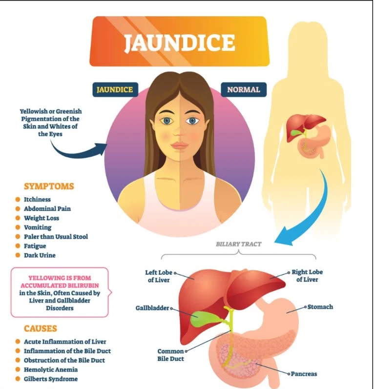
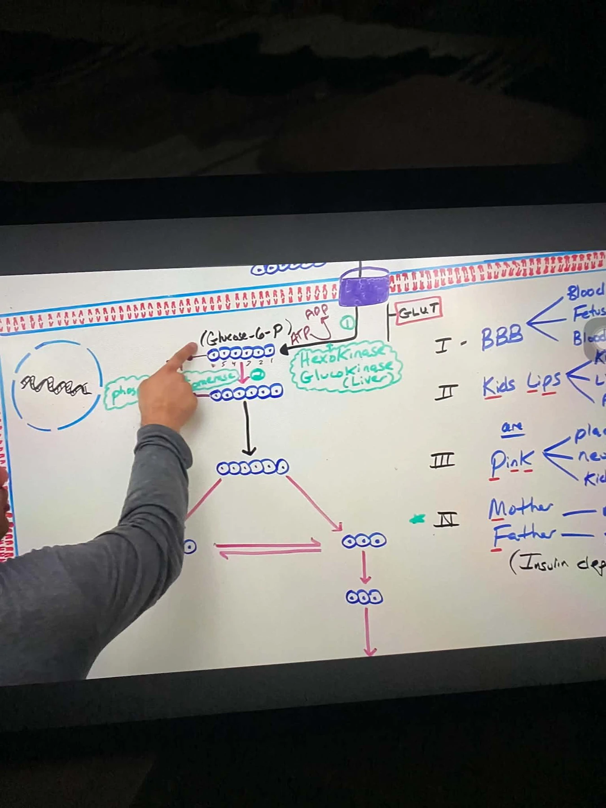
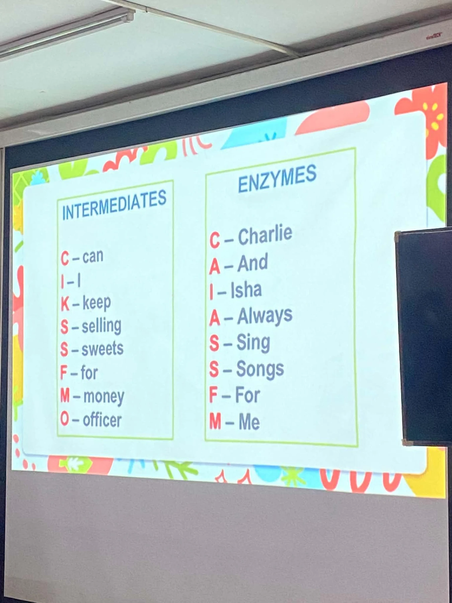
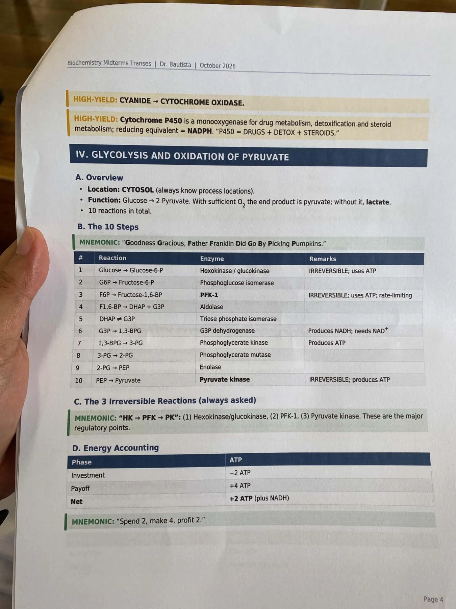
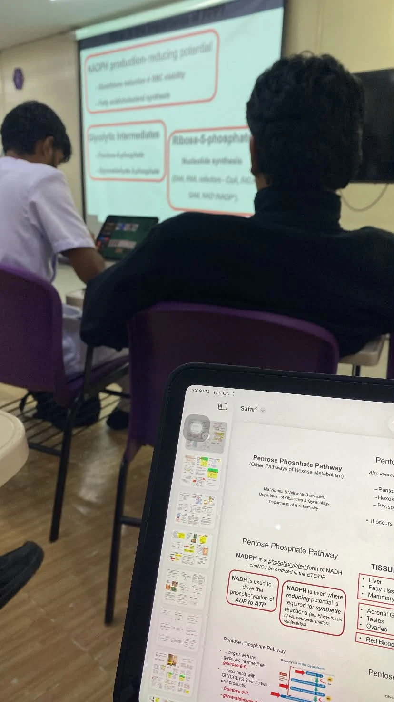
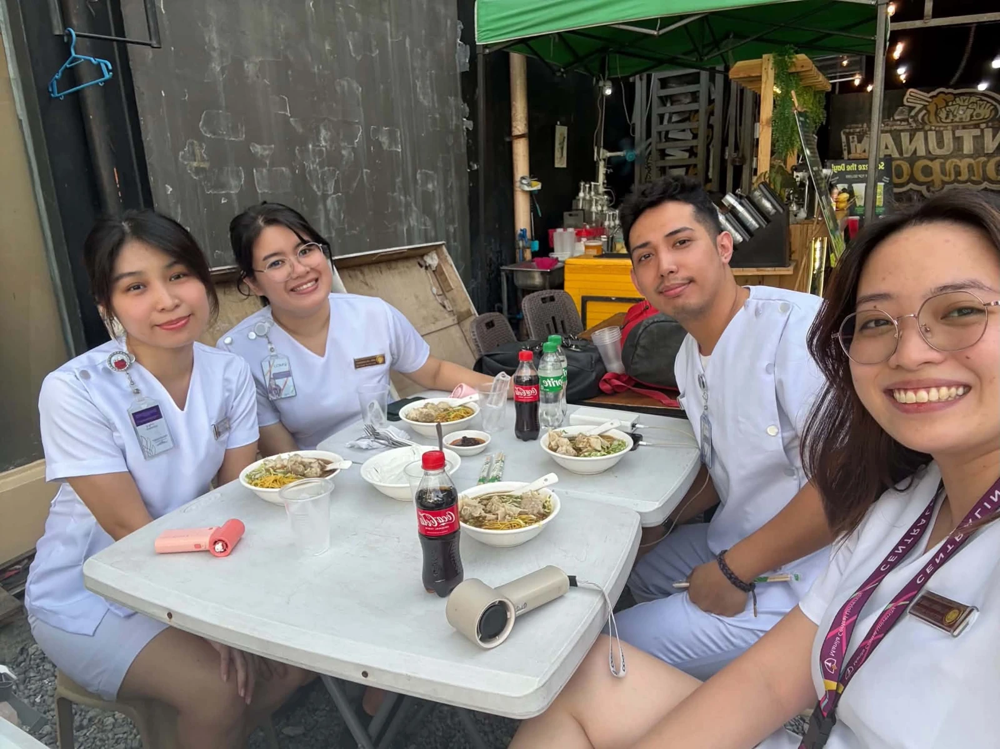
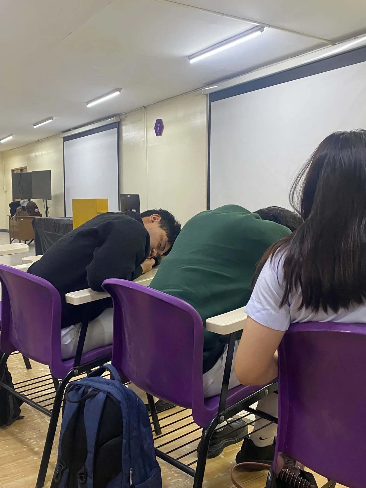
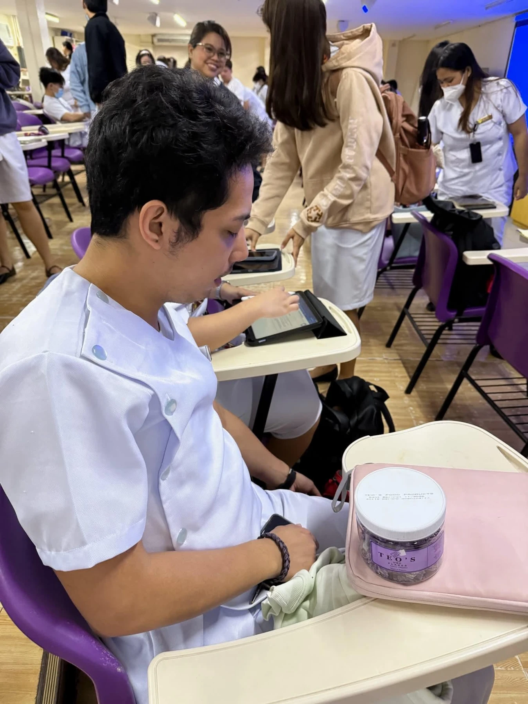

Biological Sciences
Saint Louis University, Baguio City


Prelim 2026 · Biochemistry
An educator's heart, a public servant's purpose, and a future physician's resolve.
From Baguio's mountain rootsto medicine in Metro Manila
A meaningful purpose
Hello, I am Edward Sargie Ramos Tinio, LPT. This portfolio reflects what I have learned and accomplished as an educator and public servant, and the path I am now taking toward becoming a physician.
Moving from my mountain roots in Baguio to Manila Central University in Metro Manila is more than a change in geography. It is the journey of an educator who loves guiding others and is now building the clinical knowledge needed to care for people at their most vulnerable.
“Medicine is the most personal extension of the same promise to help others.”
Education and service
Each role strengthened something I now carry into medicine: the patience to teach, the discipline to serve, and the courage to begin again.
Saint Louis University, Baguio City
Guisad Valley National High School, January to March
Saint Louis University Laboratory High School, March to June
Public service from February to December
Continued service in local government and community work
Manila Central University, Metro Manila
Beyond the classroom
From building my agricultural business and joining a tree-planting project in San Leonardo to taking part in a meeting at the House of Representatives, my journey has kept me close to the land, the communities, and the institutions I hope to serve.
THE RESILIENCE FIELD LOG / 2026
BIOCHEMISTRY / MIDTERMS
These past few weeks of Biochemistry have brought a mix of new concepts, challenging lessons, group activities, and continuous review. Some topics have taken extra effort to understand, but I have been trying to keep up and learn at my own pace. This portfolio brings together the activities I completed, the concepts I explored, and the experiences that helped shape my learning during the midterm period. I hope to continue improving and understanding each lesson more clearly as I move forward.
G6PD CASE INFOGRAPHIC
Creating our G6PD infographic with my groupmates gave us a chance to review the topic in a more creative way. One challenge was choosing the most important details and arranging them so the infographic would be informative without looking crowded. Through the activity, I gained a better appreciation of the role of G6PD in protecting red blood cells from oxidative damage. It was a useful reminder that learning can be both collaborative and creative.

View photograph ↗GROUP 1 DISCUSSION — BUILDING AND EXPLORING THE SPECTROPHOTOMETER
Before the discussion, the spectrophotometer seemed like a complicated piece of laboratory equipment. The interactive presentation helped me understand its components and how it is used. I learned that details such as selecting the appropriate wavelength and keeping the cuvette clean can influence the accuracy of the results. Doing well on the quiz was also encouraging. This activity showed me that difficult topics become more manageable when they are explained clearly and connected to practical examples.
GROUP REPORTING — BEER-LAMBERT LAW AND ABSORBANCE EXPERIMENT
Preparing our group report on the Beer-Lambert Law was challenging at first because the relationship between absorbance and concentration took time to understand. Working through the concept with my groupmates helped make it clearer. Presenting the topic in an interactive way also made the experience more engaging. I learned that absorbance measurements can be used to estimate the concentration of a substance and help monitor biochemical reactions. The activity reminded me that explaining a concept to others can strengthen my own understanding.
CHAPTER 11: BIOENERGETICS AND THE ROLE OF ATP
Studying ATP helped me see that it is more than a term to memorize for an examination. Cells need a usable form of energy to carry out their many functions, and ATP helps supply that energy. The energy obtained from food must be transformed into a form that cells can use. Learning about this process made me more aware of the many activities taking place inside the body every moment, even when we do not notice them.

View photograph ↗CHAPTER 12: BIOLOGIC OXIDATION
This chapter showed me that the body’s use of energy from food involves several coordinated biochemical processes. Nutrients do not simply provide energy immediately; their stored energy must be released and transferred through cellular reactions. I found it interesting to think about how everyday foods, including rice, take part in processes that help sustain the body. The lesson helped me appreciate the complexity behind something as ordinary as eating.
CHAPTER 13: THE RESPIRATORY CHAIN AND OXIDATIVE PHOSPHORYLATION
I had often heard that mitochondria are the powerhouse of the cell, but this chapter helped me understand the reason behind that description. I learned how electrons pass through the respiratory chain and how this process supports ATP production. I also gained a better understanding of the important role oxygen plays in cellular energy generation. Although these reactions occur at a microscopic level, they are essential to the normal functioning of the body.
CHAPTER 14: OVERVIEW OF METABOLISM AND PROVISION OF FUELS
This chapter taught me that the body can adapt its use of energy sources according to its needs and the nutrients available. Energy from food may be used right away or stored for later use. Metabolism continues even during rest, as the body still needs energy to maintain essential functions. I found it interesting that the body constantly balances the use and storage of fuels to keep its systems working.
CHAPTER 15: THE CITRIC ACID CYCLE
When I first encountered the citric acid cycle, remembering all the intermediates and reactions seemed difficult. As I studied the pathway, however, I began to understand how each step contributes to the overall process. The cycle helps break down fuel-derived molecules and produces electron carriers that support ATP generation. I still need to review some of the details, but I now have a clearer idea of why the cycle is important instead of relying on memorization alone.

View photograph ↗CHAPTER 16: GLYCOLYSIS AND OXIDATION OF PYRUVATE
Learning about glycolysis helped me understand that glucose is processed through a sequence of reactions rather than being broken down all at once. One point that stood out to me was that the pathway requires an initial investment of ATP before energy is gained later. This helped me appreciate how cells manage energy during metabolism. I also learned that glucose has an important role in several connected processes, making it much more than simply a type of sugar.

View photograph ↗CHAPTER 15: CARBOHYDRATES OF PHYSIOLOGIC SIGNIFICANCE
Before studying this topic, I mostly connected carbohydrates with common foods such as rice and bread. I learned that their functions extend beyond supplying energy. Different carbohydrates can also contribute to structural and other essential processes in the body. This chapter helped me connect familiar foods with the many biochemical activities that support normal body function.
CHAPTER 18: METABOLISM OF GLYCOGEN
I came to understand glycogen as a stored form of glucose that the body can use when energy is needed. This reserve means the body does not have to rely only on recently consumed food. I also learned that the liver and skeletal muscles have different roles in glycogen metabolism. The topic helped me see how the body prepares for changing energy demands by storing fuel and using it when appropriate.
CHAPTER 19: GLUCONEOGENESIS AND THE PENTOSE PHOSPHATE PATHWAY
Studying gluconeogenesis and the pentose phosphate pathway showed me that glucose can be involved in different processes depending on what the body requires. Through gluconeogenesis, the body can produce glucose from certain non-carbohydrate precursors when necessary. The pentose phosphate pathway, meanwhile, contributes to the production of NADPH and ribose-5-phosphate, which support other cellular functions. These pathways helped me appreciate how flexible and interconnected metabolism is.

View photograph ↗SMALL GROUP DISCUSSION
Our small group discussion about carbon monoxide was engaging, and hearing different ideas from my classmates helped me understand the topic better. I learned that carbon monoxide can interfere with the blood’s ability to transport oxygen, making exposure dangerous even when its effects are not immediately obvious. The discussion was a good reminder that learning medicine involves more than memorizing information. Sharing ideas and explaining concepts to one another can also make difficult topics easier to understand.

View photograph ↗STUDY EXPERIENCE
Reviewing Biochemistry has involved connecting many concepts and revisiting lessons until they become clearer. With several pathways and terms to remember, I sometimes need to study the same material more than once. Using my iPad helps me organize my notes and return to lessons from class more easily. I am still working on improving my study routine, especially when the workload feels heavy. My goal is to understand the concepts more deeply rather than study only to remember them for an examination.
REFLECTION FOR MIDTERMS
Biochemistry has been a demanding subject for me. Some lessons are difficult to follow because they involve many reactions, terms, and pathways that must be understood together. There are moments when I feel overwhelmed, but I am trying to respond by reviewing more consistently, asking questions, and finding study methods that help me understand the material. I know there is still room for improvement, and I am learning to be patient with myself throughout the process.
The lessons have helped me realize how complex and fascinating the human body is. From the way cells produce energy to how glucose is stored and used, each topic has shown me why Biochemistry is an important part of medical education. I may not grasp every concept immediately, but repeated study is helping me see the connections between the different processes.
As a nursing graduate now pursuing medicine, I recognize that these concepts will form part of my foundation as a future physician. I want to understand not only what happens in the body, but also why it happens and how that knowledge can help me care for patients in the future. Passing the subject is one goal, but I also hope to retain what I learn and apply it in clinical practice. There is still much to study, and I intend to keep learning and improving one topic at a time.

View photograph ↗
View photograph ↗Biochemistry · Prelim
Biochemistry has not been easy for me, but I refuse to stop. Every difficult topic gives me another reason to return, study with greater intention, and keep striving for excellence.
My first lessons in Biochemistry showed me how much depth can exist inside concepts that once seemed simple. Water and pH were familiar words, yet understanding how they sustain balance in the body required me to think more carefully. I did not grasp everything immediately, but I learned that a strong beginning is not measured by speed. It is built by returning to the basics until they become clear.
Field note: Difficulty is not a signal to stop. It is a direction for where to study next.
The quiz made me aware of the distance between recognizing a term and truly understanding it. Amino acid structures and their properties challenged the way I studied. Memorization could only take me so far. I needed to see patterns, ask why each structure behaves the way it does, and connect the details to the human body.
Field note: A difficult score can be useful when it teaches me how to prepare better.
Learning the art of questioning reminded me of my years in education. Good questions do more than collect facts. They help people feel heard and reveal information that may guide care. In the same session, protein structure showed me another kind of communication: the precise relationship between molecular form and function.
Field note: Whether in a classroom or a clinic, listening gives knowledge its purpose.
Labster introduced a new space for learning through simulation. The unfamiliar setup required patience, but it also gave me a safer way to repeat procedures, observe cause and effect, and learn from mistakes. It reminded me that progress sometimes begins with being willing to look inexperienced while learning something new.
Field note: Curiosity grows when I allow myself to explore.
This assessment did not feel easy, and parts of protein chemistry remained difficult. Instead of treating that struggle as proof that I was not capable, I used it to identify what needed more attention. I reorganized my notes, broke large topics into smaller questions, and reminded myself that improvement begins when I respond honestly to what I do not yet know.
Field note: Excellence is built from correction, not perfection.
Enzymes and their regulation tested both my patience and confidence. There were moments when the graphs, variables, and mechanisms felt impossible to hold together. I kept returning to them. Slowly, the lesson became less like a collection of formulas and more like a system of decisions inside the body.
Field note: Persistence turns confusion into a question I can eventually answer.
The prelim period taught me that effort does not always feel triumphant. Sometimes it looks like opening the lesson again after a tiring day, asking for help, and choosing to continue despite uncertainty. I am still learning Biochemistry, but I am no longer measuring growth only by how quickly I understand. I measure it by my willingness to keep going and do the next right thing.
Field note: Whatever the result, I will respond with humility, discipline, and a renewed pursuit of excellence.
People, places, purpose
These photographs hold the people and experiences behind my credentials. They also reflect my agricultural business, where patience, stewardship, and consistent care turn small beginnings into lasting growth.
The journey continues
I may still struggle with Biochemistry, but difficulty will not decide where this journey ends. I will keep showing up, keep learning from every setback, and keep striving for excellence with purpose.
Edward Sargie Ramos Tinio, LPT
ramosedw97@gmail.com 0966 661 5449 Facebook profile ↗ Talavera, Nueva Ecija · Manila Central University